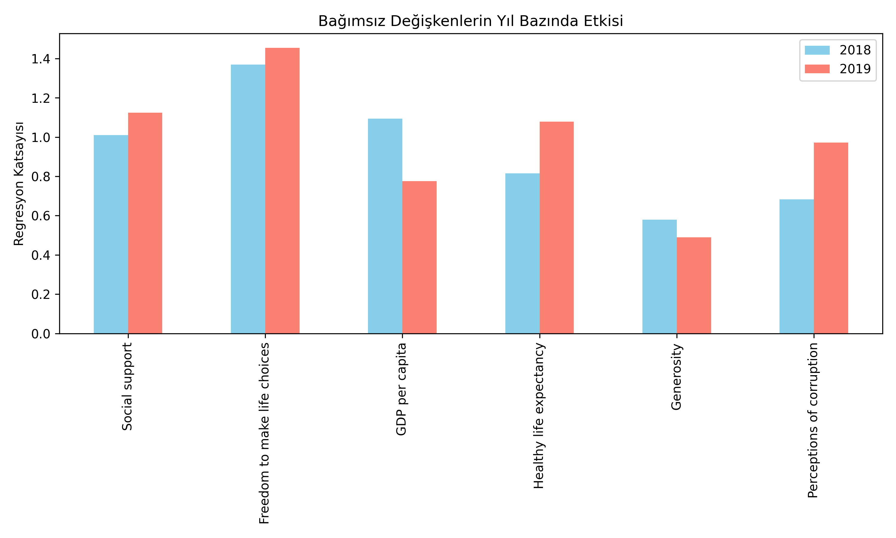
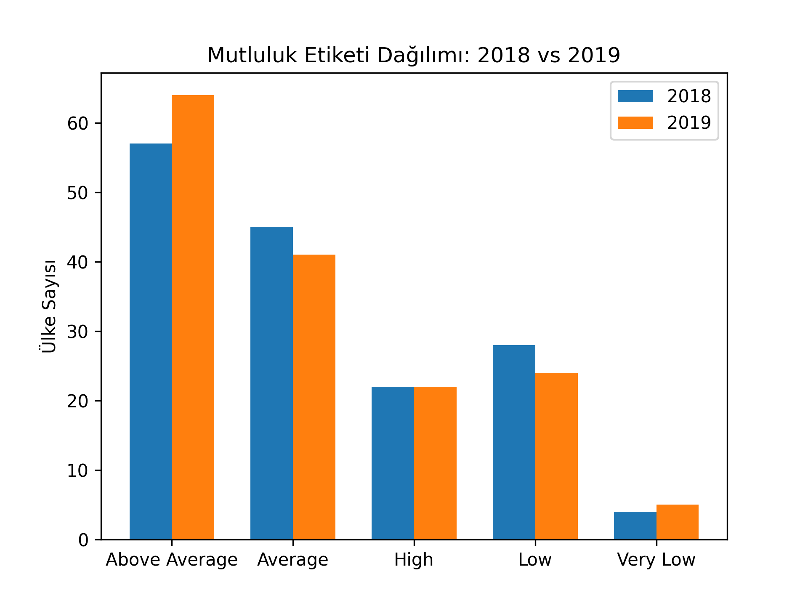
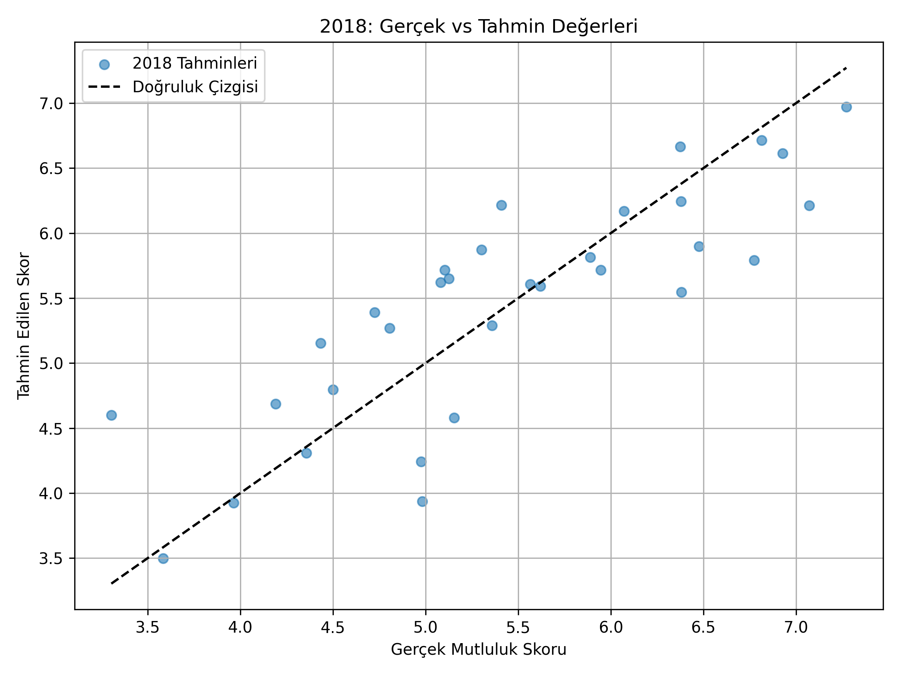
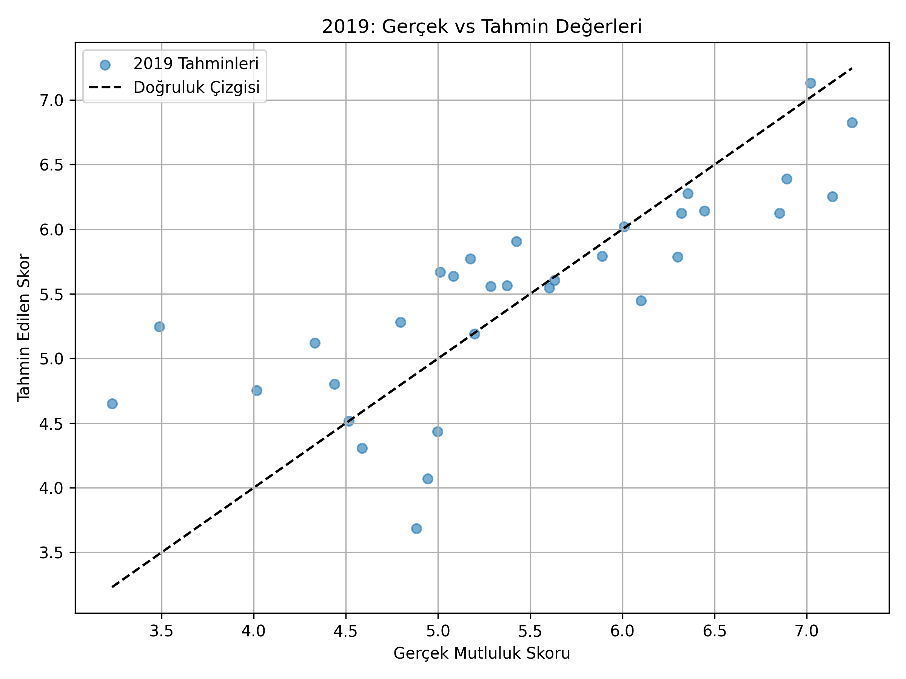

📊 Değişkenlerin Yıllara Göre Etkisi
Bu grafik, mutluluk skorunu etkileyen faktörlerin yıllara göre değişimini göstermektedir.
Looking at the variable effects chart, we see that in 2019 the effects of social support, freedom to make life choices, healthy life expectancy, and perception of corruption increased, while the effects of GDP per capita and generosity decreased.These changes are generally around ±0.2. However,since the effects of perception of corruption and generosity are quite weak, we can mostly talk about their indirect influence rather than a direct one. From these results, it can be said that freedom to make life choices has a very important and key role in happiness scores. At the same time, social support—reflecting interpersonal relationships—and factors with roughly the same level of influence, such as income distribution (GDP per capita)and healthy life expectancy, are among the most influential and should be considered carefully. Both generosity and social support relate to social relationships, but the weak effect of generosity can be explained in a few ways: Generosity mainly refers to helping others, while social support is more about receiving help—support that people get during difficult times or when in need. Another important difference is that generosity is often limited to our close social circle, whereas social support can come both from personal networks like family and friends and from more structured sources such as institutions or organizations.Therefore, the scope of support and impact on individuals can differ significantly.
😊 Mutluluk Etiket Dağılımı
Mutluluk skorlarının etiketlere göre dağılımı aşağıdaki grafikte gösterilmektedir.
In the happiness label distribution bar chart, the “above average” label increased in 2019 compared to 2018. The “average” and “low” labels slightly decreased in 2019, while the “very low” label showed a small increase. For the “high” label, we don’t see any change. From this, we can say that in 2019 the labels shifted more toward the extremes. As the “average” label decreased, the “above average” and “very low” labels increased. However, the fact that the “high” label didn’t change suggests that this shift wasn’t very strong. There could be a few reasons for this shift---> We previously found that GDP per capita had a stronger positive effect on the happiness score in 2018.The decrease in GDP per capita’s effect might have influenced the label changes. Another factor affecting the label changes could be the combination of independent variables. for example: The “freedom to make life choices” variable is the most influential variable.However,when we compare the United Kingdom’s 2018 and 2019 data, we see that the freedom to make life choice variable decreased in 2019, while GDP per capita, social support, and healthy life expectancy scores increased. This could explain the difference in 2018 labels and why the 2019 label didn’t change. Perhaps the increase in freedom to make a life choice balance out the decreases in the other variables.
🔍 Tahmn vs Gerçek (2018)
2018 yılı için modelin tahmin ettiği mutluluk skorları ile gerçek skorların karşılaştırması.
🔍 Tahmin vs Gerçek (2019)
2019 yılı için modelin tahmin ettiği mutluluk skorları ile gerçek skorların karşılaştırması.
